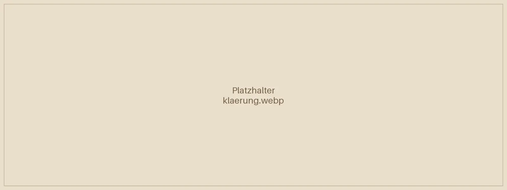
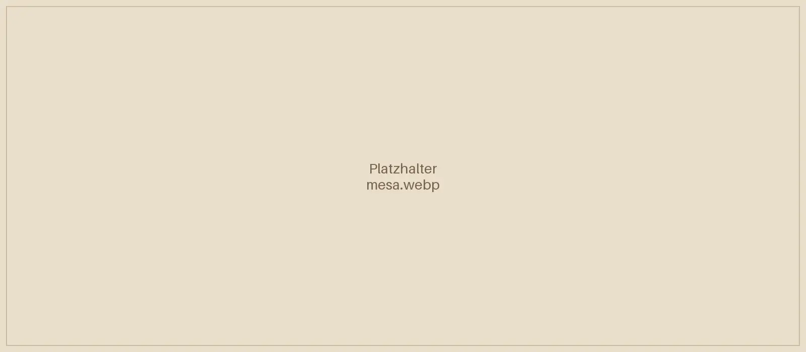
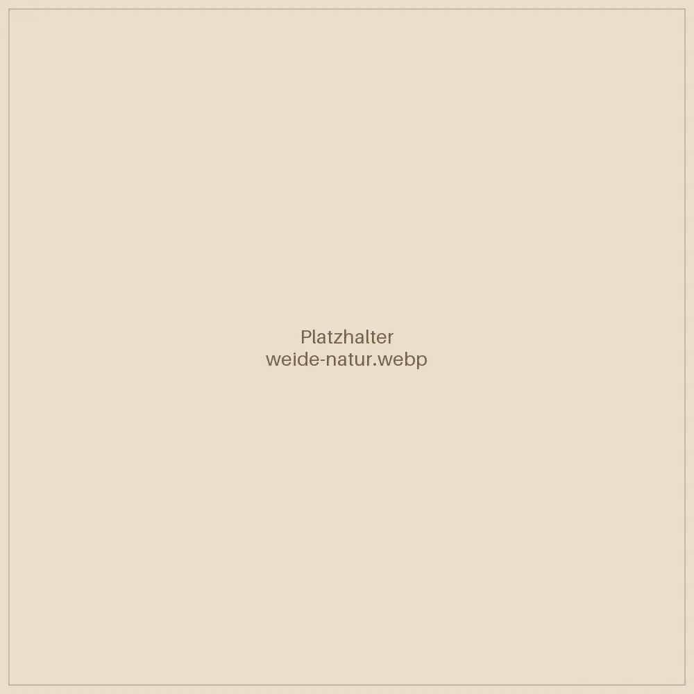

So steigen wir gemeinsam ein.
Klar. Achtsam. In deinem Tempo.
Du bringst dein Thema mit. Wir schauen gemeinsam auf das, was sich zeigt. Nichts muss erzwungen werden – du bestimmst, wie tief du gehen möchtest.
Kostenloses Kennenlernen
Bis zu 30 Minuten [TELEFONISCH / ONLINE / VOR ORT?]. Ich höre zu, erkläre dir den Ablauf und wir schauen, welches Setting zu dir passt.
Ankommen
Zu Beginn jedes Settings verschaffen wir uns mit dem Pendel einen energetischen Überblick über deine Chakren. Er dient als Orientierung für die Begleitung.
Die Begleitung
Die Methode, die zu deinem Thema passt, ergänzt durch Körperwahrnehmung und kreativen Ausdruck.
Klärung & Abschluss
Mit Palo Santo, dem heiligen Holz, und Agua Florida, dem Blütenwasser, schließen wir die Arbeit ab.


Meine persönliche Mesa
Meine Mesa ist ein gewebter, tragbarer Altar – ein heiliger Raum, geprägt von meinem Weg. In ihr liegen die Kuyas, Steine der Kraft. Jeder trägt eine eigene Qualität und Geschichte. Die Mesa ist Bestandteil jeder Begleitung.
Die Mesa arbeitet mit dir.
In der Tradition der Q’ero, wie sie durch Alberto Villoldo und The Four Winds Society in die westliche Welt gebracht wurde.

Natur – unsere größte Kraftquelle
Jedes Setting findet in einem geschützten Raum statt [ORT / PRAXISADRESSE]. Auf Wunsch arbeiten wir auch draußen – in direkter Verbindung mit Erde und Himmel. Die Details besprechen wir persönlich, im Einklang mit Wetter und Jahreszeit.
Zeit für dich. Raum für Veränderung.
Einzel-Setting
90 Minuten
130 €
Ein Raum nur für dich – für dein aktuelles Thema.
Empfohlen
Begleitzyklus
3 × 90 Minuten
390 €
Drei aufeinander abgestimmte Sitzungen, um tiefer zu gehen und Veränderung zu verankern.
Intensiv-Begleitung
4 × 90 Minuten
520 €
Vier Sitzungen für intensive Themen und langfristige Integration.
Kennenlern-Gespräch · bis zu 30 Minuten · kostenfrei
[„Alle Preise sind Endpreise. Gemäß § 19 UStG wird keine Umsatzsteuer berechnet.“ ODER „inkl. MwSt.“] · [ZAHLUNGSWEISE] · [ABSAGEREGEL, z. B. kostenfrei bis 24 h vorher]
Häufige Fragen
Ersetzt deine Arbeit eine Therapie?
Nein. Meine Arbeit ist eine energetische und körperorientierte Begleitung und ersetzt keine ärztliche oder psychotherapeutische Behandlung. Sie kann aber eine wertvolle Ergänzung auf deinem Weg sein.
Muss ich an Energiearbeit glauben?
Nein. Offenheit genügt. Du nimmst einfach wahr, was sich für dich zeigt.
Was soll ich mitbringen?
Bequeme Kleidung, etwas Zeit danach für dich und ein Glas Wasser.
Wie viele Sitzungen brauche ich?
Das ist individuell. Manche Themen brauchen eine Sitzung, andere einen Zyklus. Wir klären das im Kennenlernen.
Bietest du auch Online-Sitzungen an?
[JA/NEIN]
Was, wenn ich einen Termin absagen muss?
[ABSAGEREGEL]